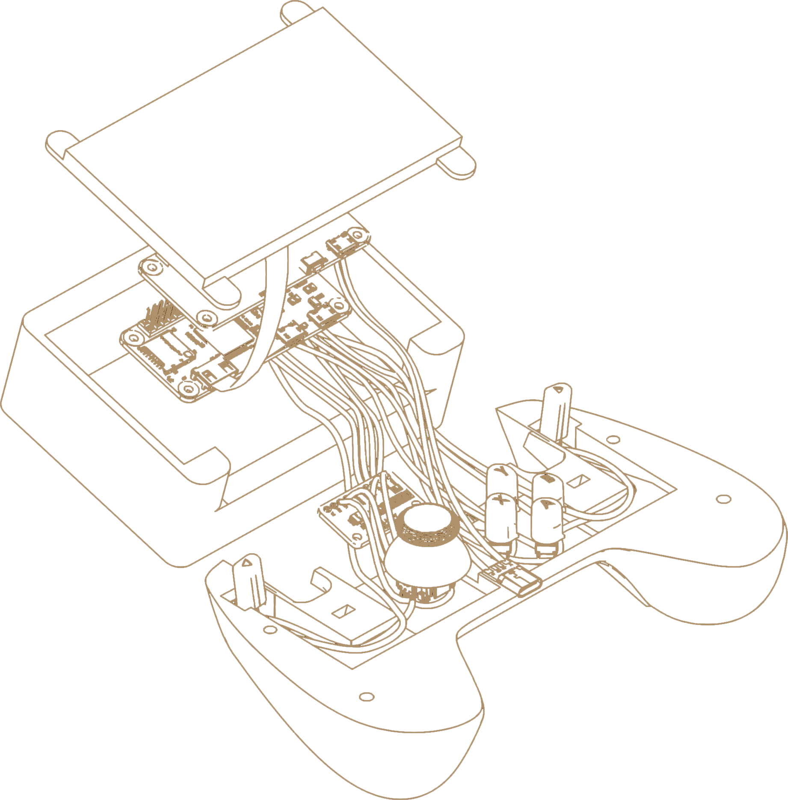
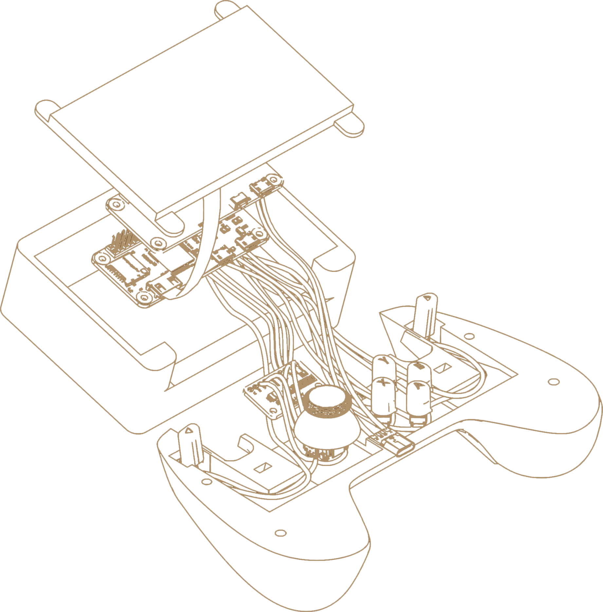

Based on the Raspberry Pi Zero 2 and capable of emulating popular retro consoles such as NES, SNES, GBA or PSP. Can also run simple games, if they are Linux and gamepad compatible.
 

The main challange with this project was getting GPIO and I2C support - since this specific Raspberry Pi model came out just a few weeks before I've started the project I had to write everything from scratch in C - no existing Python library worked on this architecture yet. You can see the source code here.
TODO: component list